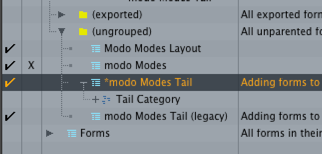

Create A Custom Form¶
Create a Custom Form¶
Lets create a simple button bar with some useful commands. E.g. a menu bar which allows us to create often used item types with one click. Like area, directional lights, locator and group locator items.
To keep everything tidy we create our new form in a new group. Go to the bottom of Groups and double click on ‘’’(new group)’’’. Enter a name for your group. In our example lets name it ‘’Quick Create’’.
In this new group we now create a new form by double clicking on ‘’’(create form)’’’ which we call ‘’QuickCreateMenu’’.
Now we need to add some commands. The easiest way to do that is to use the Undos tab in the Command History (Script editor layout). With that window open we create as usual in the Item List Editor a new area and directional light, a locator and a group locator. You can now see a couple of new commands in the undo stack. And there are also the commands listed which modo used to create the new items.
<code>item.create areaLight</code>
<code>item.create sunLight</code>
<code>item.create groupLocator</code>
<code>item.create locator</code>
We created our first custom form. To preview it select the form node and click ‘’’Preview Form’’’.
Customize The Layout¶
Nice but we want a toolbar with bottons. Select the form and under ‘’’Form Properties’’’ change the Layout to ‘’’Toolbar Horizontal’’’, set the ‘’’Icon Mode’’’ to ‘’’Icon only’’’ and the ‘’’Icon Size’’’ to ‘’’Small Icons’’’. Now we have a simple toolbar. You can see that three of the commands already have an icon. That is because some default commands of modo have an icon assigned by default. The group locator has none you can easily assign a new one in the ‘’’Custom Icon’’’ drop down or use an iconResource.
Since we want to insert our toolbar into the modo layout we need to activate Export in the Form Properties panel.
Export¶
By default modo saves all changes in the UI when we close it or if we do it manually with File > Save Config. The downside is that everything is saved in one big configFile which is not very flexible and not error prone.
The better approach is to separate the configs which makes it to update to a different modo version, move our configs to a different file location or disable specific configuration e.g. keyboard shortcuts.
To export our form do the following: Select the toolbar form in the ‘’’Form Editor’’’ and click on ‘’’Save Form…’’’. As location choose the modo default config location and create a new sub-directory which we call ‘’QuickCreate’’. Save the configuration as ‘’QuickCreateForm.cfg’’
‘’’OS X:’’’ /Users/<username>/Library/Application Support/Luxology/Kits
Windows: ???
Now start a new modo instance and if you go to the form editor our cusom QuickCreate Form should be there.
Insert The Form¶
Now we need to insert our new from into the UI. There are many ways to do this in modo but we will do the easiest one first. For that we are using the so called tail marker which every from has. In our case we use the special ‘’modoModesTail’’.
First we search for "modo modes" and under Forms or (ungrouped) we find our insert point.
Clear the search and now we select our ‘’Quick Create’’ form and drag it all the way down into the ‘’modo Modes Tail’’ ‘’’Tail Category’’’.
Now our custom menu shows up in modos main toolbar.
Scroll back up to your original form, select it and Export.
There is a faster way to add a custom menu to the tail section of the modoModes toolbar by manually adding following code snippet to your config.
1 | <atom type="Ordinal">52.53</atom>
|
</hash> The [http://modo.sdk.thefoundry.co.uk/wiki/Form_Categories_and_Groups#Sorting_within_Categories Ordinal] type sets the the order of the form.
We will do this in the next section where we create a custom button.
Create a Button¶
The little toolbar is nice but it would be better if it was a little button which would pop up the toolbar.
Here for we need to create a palette which holds the toolbar and is invoked when the button is clicked by the user.
Create a Palette¶
Go to ‘’’Layout > Palette > New’’’ to create a new palette. To load in our custom form we need to set it to ‘’’Form View’’’. Click on the small arrow on the right side of the palette window and choose Form View in the drop down menu. Next click on the gear icon activate ‘’Track Form Editor Selection’’, select a different form in the Form Editor and re-select our QuickCreate form. Now our form is visible in the palette. Don’t forget to disable the ‘’Track Form Editor Selection’’ again.
Alternatively you can also use the drop down list. If your palette is not listed here you need to enable the exportOption option in the form itself.
Save the Layout¶
Next we export our palette as a new layout. Click again on the small grey arrow in the palette and go to ‘’’Layout Controls > Save Layout As…’’’.
Here we give the layout a name: ‘’QuickCreateLayout’’, make sure it is set to save a new layout and hit ok.
To export our new layout go to ‘’’File > Config Export …’’’ save the file to the same location where our other config was saved and name it ‘’’QuickCreateButton’’’. Set the Fragments to Layouts and disable ‘’Append to File’’ and ‘’Import Resulting File’’.
Create Button Form¶
Next we create a place holder for our button object. Create a new form in located in our group. We call it ‘’’QuickCreateButton’’’. Save this form in a file called ‘’’QuickCreateButton.cfg’’’
Edit The Config File¶
Now we have three different config files. Our button, the actual toolbar and the palette layout. To combine all those three we need to do a bit of manual editing in a text editor.